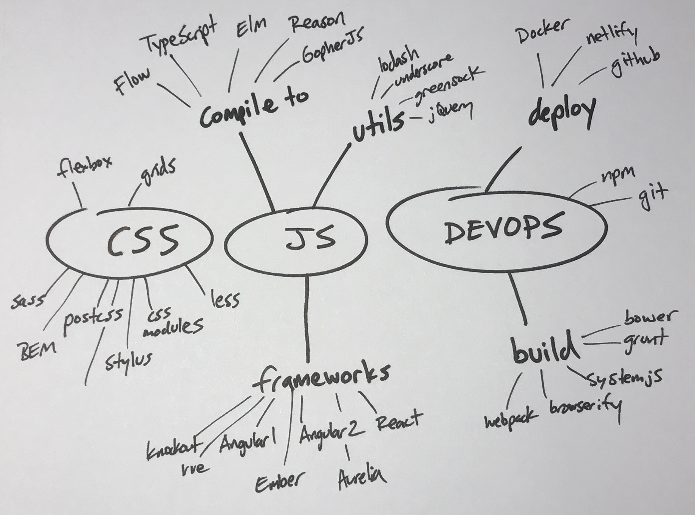
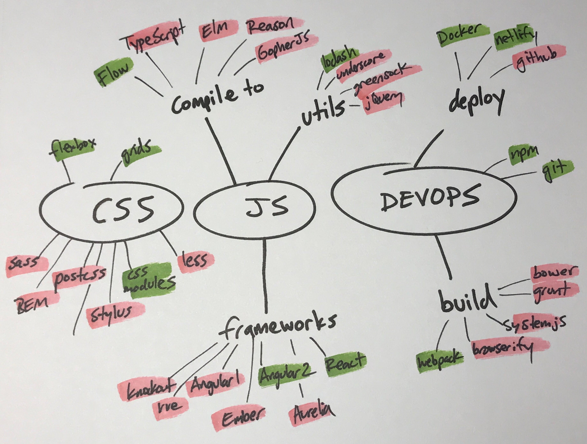

Dù bạn mới bước chân vào nghề hay đã và đang tham gia phát triển ít nhất một dự án lập trình thì chắc chắn bạn sẽ tự hỏi ít nhất một lần:
Nhiều thứ vãi đ** vậy, học bao giờ mới hết đây?
Và tôi có một tin tốt cho anh em là : "Đ*o bao giờ học hết được"...! Và kể cả khi bạn hóa thành siêu xay da cấp độ z ^ n để có thể học hết thì bạn đang lãng phí rất nhiều "vàng bạc" của bạn.
Trên thực tế số lượng những công nghệ mới để học tăng lên nhanh hơn rất nhiều so với khả năng của anh em có thể học chúng. Thậm chí ngay tại thời điểm anh em đóng gói và delivery cho khách hàng thì một nửa số công nghệ bạn sử dụng trọng dự án đã có thể bị deprecated bởi những siêu nhân ngoài kia.
Những công nghệ mới đó, một số người như tôi sẽ gọi đó là 1 đống hổ lốn, một số khác thì lại gọi nó là sự sáng tạo. Và dù là cái gì đi nữa nếu bạn quyết tâm học nó thì chúng sẽ làm bạn kiệt sức.
Tôi từng tạo một danh sách dài về tất cả công nghệ mà tôi sẽ học vào một ngày đẹp trời nào đó. Và điều này khiến tôi cảm thấy càng ngày càng lo lắng và cắn rứt lương tâm nếu tôi không thể học hết một nửa trong số chúng vào ngày mai. Và nếu thành thật với bản thân mình thì thực sự tối chẳng có tí hứng thú nào với hầu hết những thứ đó, tất cả chỉ là tôi không muốn bị bỏ lại phía sau.
Vì vậy, thay vì tạo một danh sách những công nghệ phải học thì tôi tạo một danh sách những thứ mà tôi sẽ không học.
Đầu tiên tôi chia tất cả công nghệ theo từng category :

Sau đó đơn giản tôi chọn một số mà tôi thực sự có hứng thú và gạch bỏ tất cả những thứ còn lại. Những thứ mà tối sẽ không đầu tư thêm thời gian và sự tập trung vào chúng nữa. Và những thứ làm tôi hứng thú là những thứ có thể tôi đã biết khá rõ nhưng phải tiếp tục học nhiều thứ hơn nếu bạn muốn thực sự làm chủ chúng...

Sau khi bạn làm điều này, bạn không cảm thấy giống như bạn phải học tất cả mọi thứ. Bạn không phải cập nhật những công nghệ mà bạn đã học một vài năm trước và giờ vì tiếc nuối mà bạn học lại nó . Tất cả năng lượng của bạn sẽ được dồn vào ít thứ hơn - những thứ mà bạn thực sự cảm thấy thú vị.
( Chú ý rằng bản whiteboard kia là những thứ làm 1 Web developer như tôi cảm thấy thú vị, không phải một bản danh sách cho tất cả mọi người. Bạn nên làm điều này cho những công nghê yêu thích của riêng bạn. Có thể là backend/ DB,.. )
Phương pháp này giúp khi nghĩ về những thứ mà bạn đã gạch đi giống như quá trình R&D (Research và Phát triển) cho những công nghệ có chung category. Ví dụ tôi sẽ không học Ember "chỉ vì" Ember đang làm mọi JS framework hiện tại và tương lai trở nên tốt hơn.
Cũng giống như Elm, Reason và TypeScript. Cá nhân tôi sẽ không dành thời gian cho chúng nhưng tôi sẽ rất khâm phục những tác giả của những công nghê đó bởi vì tối biết những ý tưởng tuyệt vời của họ đã ảnh hưởng đến javascript.
Để làm được điều này bạn cũng cần phân biệt sự quan tâm thực sự của bạn với sự quan tâm nhất thời với một công nghệ nào đó mà bạn được nghe ở 1 buổi talkshow hay 1 buổi workshop. Hay là sự quan tâm đến những công nghệ đang hot.
Tất cả là sự quan tâm thực sự hoặc là không quan tâm.
Điều này nói thì dễ nhưng để làm thì cũng cần sự kiên trì và một trái tim "lạnh" với những công nghệ hiện nay, mỗi công nghê đều có cái hay và một cái dở riêng. Không nên đứng núi này trông núi nọ để rồi lại sa đà vào bể khổ :))
Chốt hạ, cái gì bạn thực sự muốn học ? Cái gì không muốn học ? Ngay bây giờ hãy lấy một tờ giầy và vẽ tất cả những thứ bạn đang suy nghĩ lên đó.
Cảm ơn anh em đã đọc ^.^ . Bài viết được copy từ
đây